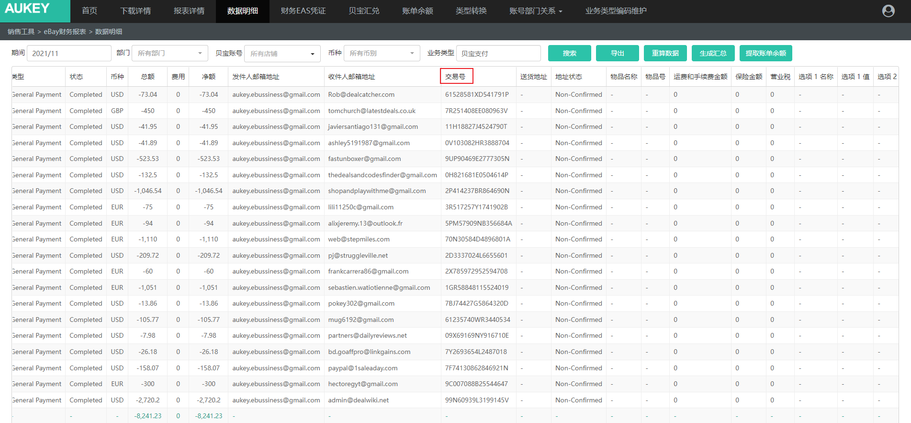

点击【生成汇总】按钮，【业务类型】=“贝宝支付”的数据行不做汇总处理，按明细生成财务EAS凭证，同时新增以下逻辑；
将“贝宝支付”类型数据，根据当前页面【交易号】联查【费用报销/费用报销记录】和【费用报销/预付申请记录】是否存在相同【交易号】的记录；
（联查范围仅限于【费用报销记录、预付申请记录】中【申请日期】半年内（以当前页面数据【日期】为起点往前推半年）且【支付/收款方式】=“PAYPAL”的数据）
1）如存在，则拉取【单据编号】【申请人】【费用支付公司】【费用类型】【费用承担部门】字段值至【财务EAS凭证】页面所生成的数据行对应字段中；——详见需求【财务EAS凭证】；
①校验若该数据行字段【法人主体】≠所拉取字段【费用支付公司】，则同时在【财务EAS凭证】页面新增数据行；
②校验若该数据行字段【法人主体】＝所拉取字段【费用支付公司】，则不新增数据行；
2）如不存在，则将“贝宝支付”类型数据，根据当前页面【参考交易号】联查【费用报销/费用报销记录】和【费用报销/预付申请记录】是否存在相同【交易号】的记录：逻辑同上；若同样【参考交易号】不存在，则按明细直接推送生成财务EAS凭证，不做其他处理；